第 57 章 貝葉斯廣義線性回歸模型的擴展 continuous mixture models
- It is important to get comfortable with waiting or a good approximation of the posterior, instead of using some terrible-but-fast approximation.
- Richard McElreath
57.1 Beta 二項分佈模型 beta-binomial model
Beta 二項分佈模型其實是一系列的二項分佈模型的混合體 (a mixture of binomial distributions)。它假定的是每個二進制觀測值，都有自己的實際成功概率。該模型的目的是估計這些成功概率所構成的概率分佈 (estimate the distribution of probabilities of success)，而不是某一個特定的試驗的成功概率。
下面我們使用大學錄取率這個數據來解釋這個模型。這個數據本身假如我們不知道每個學院之間的錄取率相差很大，也就是當數據本身如果不含有學院 (dept) 信息時，我們可能會誤認爲整所大學的錄取率都是一樣的。我們之前是通過在邏輯回歸模型種增加學院 dept 這一個變量來獲得正確的男女申請人錄取率之差的比較的。這裏我們轉換一個思路，使用beta二項分佈模型，並且不把學院當作已知變量，看這個模型的神奇之處。它的靈活性在於，該模型會初始默認每一行觀測值，都其實有自己的錄取（成功）概率，而不是統一的錄取概率。這些不同的錄取概率本身構成了一個分佈，它可以用 beta 分佈來描述。beta分佈有兩個參數，一個是平均成功概率 (average probability) \(\bar{p}\)，還有一個是描述概率分佈密度形狀的形狀參數 (shape parameter) \(\theta\)。\(\theta\) 負責描述這些概率在 \([0, 1]\) 的範圍內的分佈有多寬泛 (how spread out the distribution is)。當 \(\theta = 2\) 時，是一個平坦分佈，也就是從 0 到 1 之間的所有概率的概率是相同的 (every probability from 0 to 1 is equally likely)。當 \(\theta > 2\)，分佈變得越來越向中間的平均概率處集中 (more concentrated)，當 \(\theta < 2\)，分佈本身則越來越向兩邊的極端概率處靠攏 (dispersed that extreme probabilities near 0 and 1 are more likely than the mean)。它的概率密度分佈圖可以用下面的代碼來獲得：
curve( dbeta2(x, 0.5, 5), from = 0, to = 1,
xlab = "probability", ylab = "Density",
bty = "n", ylim = c(0, 4),
main = "beta distributions with different parameters")
curve( dbeta2(x, 0.5, 1), from = 0, to = 1,
add = TRUE, col = rangi2, lwd = 2)
curve( dbeta2(x, 0.5, 2), from = 0, to = 1,
add = TRUE, col = "red")
text(0.5, 2, "beta(p = 0.5, theta = 5)")
text(0.5, 0.3, "beta(p = 0.5, theta = 1)", col = rangi2)
text(0.5, 1.2, "beta(p = 0.5, theta = 2)", col = "red")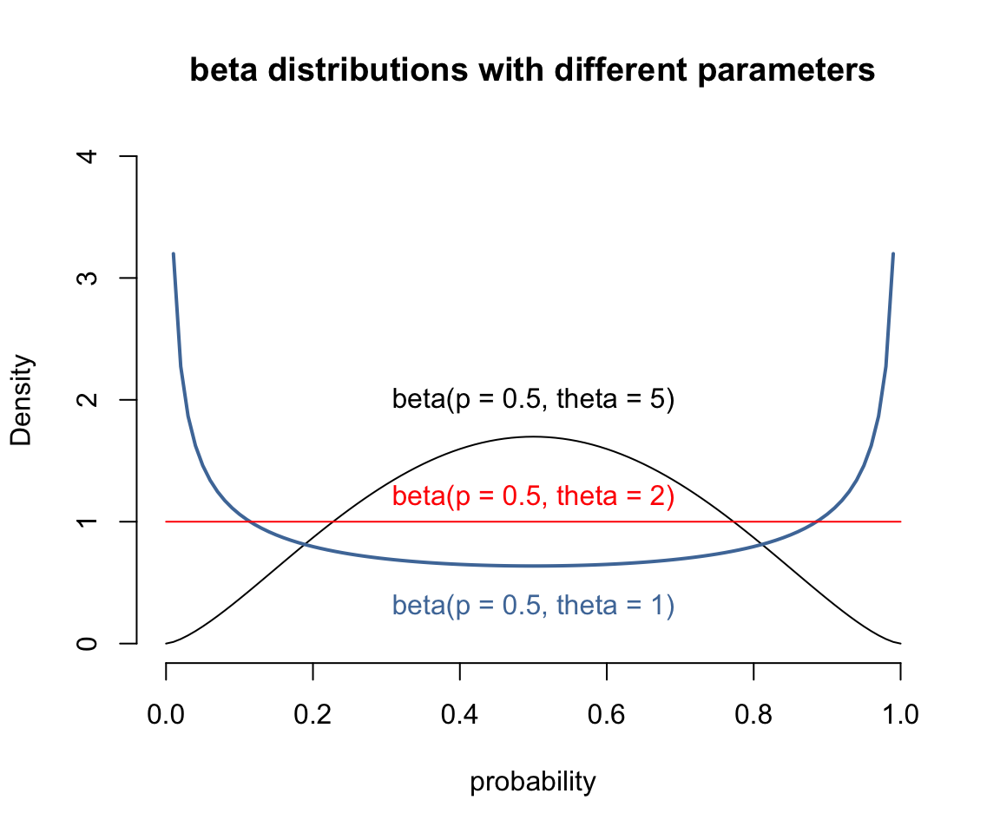
圖 57.1: Beta distributions with different means and dispersion.
接下來我們思考如何把線性模型和 \(\bar{p}\) 聯繫起來，需要達到的效果是當預測變量發生變化時，我們應該觀察到錄取率的平均值會隨之發生變化。如果用數學表達式來描述就是：
\[ \begin{aligned} A_i & \sim \text{BetaBinomial}(N_i, \bar{p}_i, \theta) \\ \text{logit}(\bar{p}_i) & = \alpha_{\text{GID}[i]} \\ \alpha_j & = \text{Normal}(0, 1.5) \\ \theta & = \phi + 2\\ \phi & \sim \text{Exponential}(1) \end{aligned} \]
其中，
- \(A_i\) 是結果變量，表示被錄取（成功）與否。
- \(N_i\) 是申請人總數。
- \(\text{GID}[i]\) 是表示性別的索引變量（男性 = 1，女性 = 2）。
- 我們希望把 Beta 分佈的概率分散程度 (dispersion) 控制在大於2。這是因爲我們不忍爲錄取概率在任何一個學院會是趨向於兩極化的（要麼不錄取，要麼錄取）而應該是集中在某個平均值附近的，那麼這樣的Beta分佈需要的分散程度 \(\theta\) 必須大於等於2。當它等於2時，我們看見概率是一個均一分佈，也就是所有的學院錄取率保持不變。爲了滿足這個分散程度取值大於等於2，我們使用的是一個簡單的技巧，用 \(\phi + 2\) 表示 \(\theta\) 並且使 \(\phi\) 服從指數分佈，因爲服從指數分佈的值是大於等於零的。
下面的代碼運行的是上述的模型：
# [LEGACY rethinking — preserved for reference]
data("UCBadmit")
d <- UCBadmit
d$gid <- ifelse( d$applicant.gender == "male", 1L, 2L )
dat <- list(
A = d$admit,
N = d$applications,
gid = d$gid
)
m12.1 <- ulam(
alist(
A ~ dbetabinom( N, pbar, theta),
logit(pbar) <- a[gid],
a[gid] ~ dnorm( 0, 1.5 ),
transpars> theta <<- phi + 2.0,
phi ~ dexp(1)
), data = dat, chains = 4, cmdstan = TRUE
)
saveRDS(m12.1, "../Stanfits/m12_1.rds")d <- read.csv("../backupfiles/UCBadmit.csv", sep = ";")
d$gid <- ifelse(d$applicant.gender == "male", 1L, 2L)
d$gid_f <- factor(d$gid)
b12.1 <- brm(
admit | trials(applications) ~ 0 + gid_f,
family = beta_binomial(),
prior = c(prior(normal(0, 1.5), class = b),
prior(exponential(1), class = phi)),
data = d,
chains = 4, cores = 4,
file = "Stanfits/brm_m12_1"
)在 rethinking 中，我們爲 theta 使用了 transpars> 標記使 Stan 保存轉換參數。在 brms 的 beta_binomial() 家族中，分散程度參數被直接命名爲 phi 並自動保存在採樣結果中（注意這裏的 phi 和原模型中的 \(\phi\) 不完全相同——brms 的 phi 直接對應原模型的 \(\theta = \phi + 2\)，即 brms 內部不需要加2的變換）。我們可以使用採樣過後的 b12.1 計算其事後的男女錄取率之差:
## Family: beta_binomial
## Links: mu = logit
## Formula: admit | trials(applications) ~ 0 + gid_f
## Data: d (Number of observations: 12)
## Draws: 4 chains, each with iter = 2000; warmup = 1000; thin = 1;
## total post-warmup draws = 4000
##
## Regression Coefficients:
## Estimate Est.Error l-95% CI u-95% CI Rhat Bulk_ESS Tail_ESS
## gid_f1 -0.42 0.43 -1.30 0.42 1.00 3283 2416
## gid_f2 -0.30 0.43 -1.15 0.55 1.00 3601 2900
##
## Further Distributional Parameters:
## Estimate Est.Error l-95% CI u-95% CI Rhat Bulk_ESS Tail_ESS
## phi 2.67 0.91 1.26 4.79 1.00 3504 2993
##
## Draws were sampled using sampling(NUTS). For each parameter, Bulk_ESS
## and Tail_ESS are effective sample size measures, and Rhat is the potential
## scale reduction factor on split chains (at convergence, Rhat = 1).draws <- as_draws_df(b12.1)
draws$da <- draws$b_gid_f1 - draws$b_gid_f2
cat("\nDifference a[1]-a[2] (log-odds):\n")##
## Difference a[1]-a[2] (log-odds):print(posterior::summarise_draws(
posterior::as_draws_df(data.frame(
a1 = draws$b_gid_f1, a2 = draws$b_gid_f2,
da = draws$da, phi = draws$phi)),
mean, sd, ~quantile(.x, probs = c(0.055, 0.945))))## # A tibble: 4 × 5
## variable mean sd `5.5%` `94.5%`
## <chr> <dbl> <dbl> <dbl> <dbl>
## 1 a1 -0.421 0.426 -1.10 0.256
## 2 a2 -0.302 0.428 -0.993 0.382
## 3 da -0.119 0.604 -1.09 0.851
## 4 phi 2.67 0.914 1.44 4.31上面對 m12.1 的時候樣本進行的計算和比較可以看見，a[1] 是男性申請人被錄取的對數比值 log-odds，它的均值似乎略微比 a[2] 女性申請人被錄取的對數比值稍微低一些。但是，它們二者的差的事後均值 da 沒有顯著偏離 0，其事後概率分佈的可信區間也包括0。所以並沒有太多的證據表明男女申請人之間在這所大學的錄取率上有任何性別的歧視或者偏差。但是記得我們在前一個章節裏，使用簡單的邏輯回歸模型時，除非把學院這一變量加入預測變量中加以考慮才能獲得相似的正確答案。之前當沒有加入學院這一變量的時候，我們其實被告知男女之間有較大的錄取率的性別差，特別是女生的錄取率在表面上看起來似乎比較低。但是當我們把簡單邏輯回歸模型棄用之後，選擇使用beta二項分佈回歸模型在 m12.1 中之後，即使沒有把學院變量放進模型中去，依然獲得了準確的男女之間錄取率的比較結果。這是爲什麼呢？
其實當選用 beta 二項分佈的時候，我們允許了每一行的數據，也就是每一個學院的男性申請人數據，和每一個學院的女性申請人數據分別擁有自己的截距。這些截距其實是從一個均值是 \(\bar{p}_i\)，分散程度是 \(\theta\) 的 beta 分佈中採集而來的。我們可以直觀地繪製這個 beta 分佈的形狀來加深對 m12.1 模型的理解：
draws <- as_draws_df(b12.1)
gid <- 2
# draw posterior mean beta distribution
curve( dbeta2(x, mean(inv_logit(draws$b_gid_f2)), mean(draws$phi)),
from = 0, to = 1, ylab = "Density", xlab = "probability admit",
ylim = c(0, 3), lwd = 2, bty = "n")
curve( dbeta2(x, mean(inv_logit(draws$b_gid_f1)), mean(draws$phi)),
from = 0, to = 1, ylab = "Density", xlab = "probability admit",
ylim = c(0, 3), lwd = 2, add = TRUE, col = rangi2)
# Draw 50 beta distributions sampled from posterior
for( i in 1:50 ) {
p <- inv_logit( draws$b_gid_f2[i] )
phi_val <- draws$phi[i]
curve( dbeta2(x, p, phi_val), add = TRUE, col = col.alpha("black", 0.2))
}
for( i in 1:50 ) {
p <- inv_logit( draws$b_gid_f1[i] )
phi_val <- draws$phi[i]
curve( dbeta2(x, p, phi_val), add = TRUE, col = col.alpha(rangi2, 0.2))
}
mtext("distribution of female admission rates (black); male admission rates (blue)")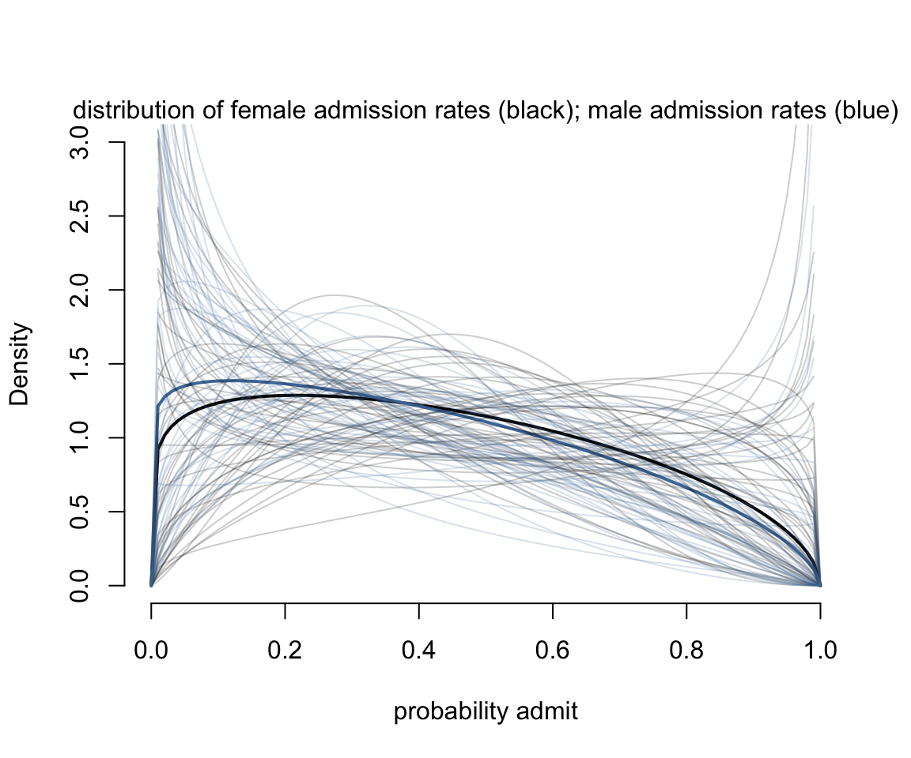
圖 57.2: Posterior distributions for b12.1. The thick curves are the posterior mean beta distribution for male and female applicants. The ligher curves represents 50 combinations of bar(p) and phi sampled from the posterior.
如圖 57.2 所示的，我們允許了不同的錄取率，這樣一來不論男女，在不同的學院之間錄取率的差異被考慮了進來，男女之間的差異也就不那麼明顯了。同時也避免了模型錯誤地認爲女性受到了錄取上的歧視。雖然模型 m12.1 並不知道有學院這個變量（我們並沒有在模型中的任何地方加入學院這個變量），它依然靈活準確地給出了允許不同錄取率這一重要的方案，它使用 beta 分佈來估計該錄取概率在不同的人羣中可能的變化，我們可以再看看該模型的事後證實檢驗 (posterior validation check):
# Posterior predictive check — replaces rethinking::postcheck()
# Note: brms posterior_predict() returns counts (not proportions),
# so the scale differs from the original postcheck() figure.
yrep <- posterior_predict(b12.1)
pred_mean <- colMeans(yrep)
pred_ci <- apply(yrep, 2, PI)
plot(1:nrow(d), d$admit, pch = 16, col = rangi2,
ylim = range(c(d$admit, pred_ci)),
xlab = "case", ylab = "admit", bty = "n",
main = "Posterior predictive check (b12.1)")
points(1:nrow(d), pred_mean, pch = 1)
for (i in 1:nrow(d)) lines(c(i, i), pred_ci[, i])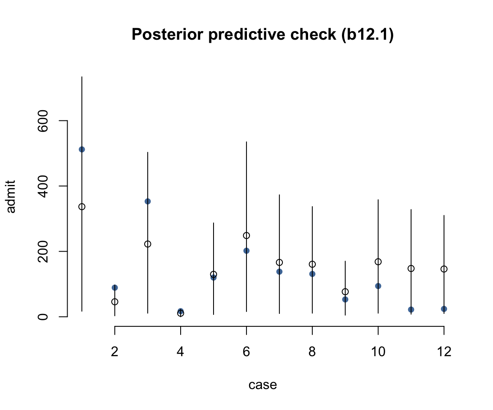
圖 57.3: Posterior validation check for b12.1. As a result of widely dispersed beta distributions on the figure above, the raw data (blue) is contained within the prediction intervals. Note: unlike the rethinking postcheck() which plots admission rates (proportions 0–1 on the y-axis), brms posterior_predict() generates counts on the original scale, so the y-axis here shows the number of admissions.
57.2 負二項分佈模型，伽馬泊松回歸模型 Negative-binomial/gamma-Poisson
類似beta二項分佈模型和邏輯回歸模型之間的關係，負二項分佈模型 (negative-binomial)，或者更準確的名字叫做伽馬泊松回歸模型，和泊松回歸模型之間的關係。伽馬泊松回歸模型其實是允許了每一個泊松計數 Poisson count 擁有各自不同的事件發生率。它估計的是一個叫做伽馬分佈的形狀，用來描述該泊松事件的發生率本身的分佈。預測變量估計的是一個伽馬分佈的形狀，而不是簡單的事件發生率的期望值 \(\lambda\)。這樣做有什麼好處呢？一是使得模型變得更加靈活，不用被泊松回歸模型的均值方差必須相等的條件給限制住。伽馬泊松回歸模型擁有兩個重要參數需要估計，一個是發生率的均值 (mean of rate) \(\lambda_i\)，另一個是表示該伽馬分佈的分散程度 dispersion 的參數 \(\phi\)。
\[ y_i \sim \text{Gamma-Poisson}(\lambda_i, \phi) \]
其中，\(\lambda_i\) 可以被視爲和普通的泊松分佈的發生率參數相似，但是分散程度 dispersion 參數 \(\phi\) 是必須大於零的，它控制着方差的大小。伽馬泊松分佈的方差是 \(\lambda + \lambda^2/\phi\)。所以，當 \(\phi\) 越大，該方差約接近 \(\lambda\)，也就是越接近一般的泊松回歸模型。
我們用之前用過的太平洋島國生產工具數據來演示該模型的使用和分析過程。之前使用簡單泊松回歸模型時，我們發現夏威夷島的工具種類數據是一個非常有影響力的觀測值。當我們把模型改成伽馬泊松回歸分佈時，夏威夷數據對模型結果的影響應該會小很多。因爲伽馬泊松回歸模型本身就預計數據本身的均值有較大的差異。
該模型的數學表達式是：
\[ \begin{aligned} \text{tools_i} & \sim \text{Gamma-Poisson}(\mu_i, \phi) \\ \mu_i & = \exp(\alpha_{\text{cid}[i]})\text{population}_i^{\beta_{\text{cid}[i]}} / \gamma \\ \alpha_j & \sim \text{Normal}(1,1)\\ \beta_j & \sim \text{Exponential}(1) \\ \gamma & \sim \text{Exponential}(1) \\ \phi & \sim \text{Exponential}(1) \end{aligned} \]
# [LEGACY rethinking — preserved for reference]
data(Kline)
d <- Kline
d$P <- standardize( log(d$population) )
d$cid <- ifelse( d$contact == "high", 2L, 1L )
dat2 <- list(
T = d$total_tools,
P = d$population,
cid = d$cid
)
m12.2 <- ulam(
alist(
T ~ dgampois( lambda, phi ),
lambda <- exp(a[cid]) * P^b[cid] / g,
a[cid] ~ dnorm(1, 1),
b[cid] ~ dexp(1),
g ~ dexp(1),
phi ~ dexp(1)
), data = dat2, chains = 4, log_lik = TRUE
)
saveRDS(m12.2, "../Stanfits/m12_2.rds")d <- read.csv("../backupfiles/Kline.csv", sep = ";")
d$cid <- ifelse(d$contact == "high", 2L, 1L)
d$cid_f <- factor(d$cid)
d$logP <- log(d$population)
# Nonlinear formula: log(mu) = a + b*logP ↔ mu = exp(a)*P^b
# (g from original model absorbed into per-cid intercepts a)
b12.2 <- brm(
bf(total_tools ~ a + b * logP,
a ~ 0 + cid_f,
b ~ 0 + cid_f,
nl = TRUE),
family = negbinomial(),
prior = c(prior(normal(1, 1), nlpar = "a"),
prior(exponential(1), nlpar = "b", lb = 0),
prior(exponential(1), class = shape)),
data = d,
chains = 4, cores = 4,
file = "Stanfits/brm_m12_2"
)## Family: negbinomial
## Links: mu = log
## Formula: total_tools ~ a + b * logP
## a ~ 0 + cid_f
## b ~ 0 + cid_f
## Data: d (Number of observations: 10)
## Draws: 4 chains, each with iter = 2000; warmup = 1000; thin = 1;
## total post-warmup draws = 4000
##
## Regression Coefficients:
## Estimate Est.Error l-95% CI u-95% CI Rhat Bulk_ESS Tail_ESS
## a_cid_f1 1.01 0.74 -0.44 2.44 1.00 1771 1458
## a_cid_f2 1.07 0.94 -0.81 2.89 1.01 1470 1410
## b_cid_f1 0.26 0.08 0.10 0.43 1.00 1749 1603
## b_cid_f2 0.29 0.11 0.08 0.50 1.01 1498 977
##
## Further Distributional Parameters:
## Estimate Est.Error l-95% CI u-95% CI Rhat Bulk_ESS Tail_ESS
## shape 3.72 1.66 1.33 7.74 1.00 2200 1773
##
## Draws were sampled using sampling(NUTS). For each parameter, Bulk_ESS
## and Tail_ESS are effective sample size measures, and Rhat is the potential
## scale reduction factor on split chains (at convergence, Rhat = 1).b12.2 <- add_criterion(b12.2, "loo", moment_match = TRUE)
k <- b12.2$criteria$loo$diagnostics$pareto_k
plot( d$population, d$total_tools,
bty = "n",
xlab = "population",
ylab = "total tools",
col = rangi2, pch = ifelse( d$cid == 1, 1, 16), lwd = 2,
ylim = c(0, 75), cex = 1 + normalize(k))
ns <- 100
P_seq <- seq( from = -5, to = 3, length.out = ns )
# 1.53 is sd of log(population)
# 9 is mean of log(population)
pop_seq <- exp( P_seq*1.53 + 9 )
# Low contact predictions
newdata_low <- data.frame(logP = log(pop_seq),
cid_f = factor(1, levels = levels(d$cid_f)))
lambda <- posterior_epred(b12.2, newdata = newdata_low)
lmu <- apply( lambda, 2, mean)
lci <- apply( lambda, 2, PI)
text(150000, 57, "low contact")
lines( pop_seq, lmu, lty = 2, lwd = 1.5 )
shade( lci, pop_seq, xpd = FALSE )
# High contact predictions
newdata_high <- data.frame(logP = log(pop_seq),
cid_f = factor(2, levels = levels(d$cid_f)))
lambda <- posterior_epred(b12.2, newdata = newdata_high)
lmu <- apply( lambda, 2, mean )
lci <- apply( lambda, 2, PI )
lines( pop_seq, lmu, lty = 1, lwd = 1.5 )
shade( lci, pop_seq, xpd = FALSE )
text(110000, 69, "high contact")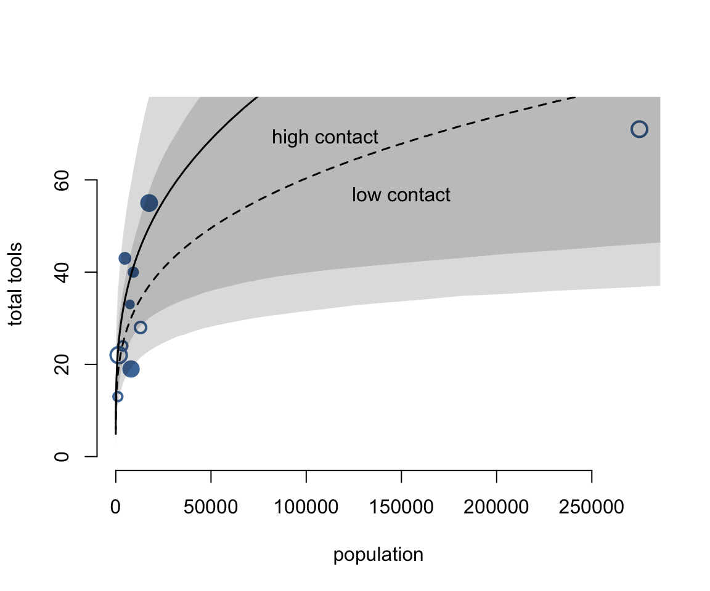
圖 57.4: The gamma-Poisson model is much less influenced by Hawaii, because the model expects more variation. The increased variation in the size of the shaded regions are much larger than in the pure Poisson model. (Figure 53.16)
57.3 零膨脹模型 zero-inflated models
很多時候，觀察事件發生的數量種，含有很多零的數值。產生這些零觀察值的原因可能不只一個。可能是因爲多種不同的原因導致的這樣的數據的產生。假設你去森林裏打算數一種知更鳥。那你觀察不到知更鳥的原因很可能是，森林裏真的沒有知更鳥；另一種可能的原因是，你的腳步聲嚇跑了這些本來生活在樹林裏的知更鳥。所以當產生零的機制有多種時，我們可能可以通過一種叫做零膨脹模型 (zero-inflated models) 的方法來建立回歸模型，分析數據。
57.3.1 零膨脹泊松回歸模型 zero-inflated Poisson
假設有一羣人在生產某種文件，每天有一定，但是很低的概率成功產生一份文件。所以當該試驗單獨存在時，就只是簡單的二項分佈數據，當觀察的天數特別多的時候，因爲成功概率很低，其過程近似成爲一個泊松分佈的數據。假設，有些日子確實不能產生文件，但是有些日子這羣人其實並沒有工作，而是偷懶休息了，這樣的日子裏，產生文件的概率也是零。假如你想知道這羣人有多少天其實是沒有在工作，而不是工作了無法產生文件的話，就需要用到零膨脹泊松回歸模型。這個產生觀察值是 0 的過程其實是一個混合體，它包括兩種可能性：
- 沒人上班，偷懶
- 上班了，但是文件生成失敗
於是我們需要重新定義該數據產生零的似然函數，令
- \(p\) 表示偷懶不上班的概率
- \(\lambda\) 表示上班時，成功產生文件的件數的平均值（期望）
那麼產生 0 數據的過程其實可以表達爲：
\[ \begin{aligned} \text{Pr}(0 | p, \lambda) & = \text{Pr}(\text{drink} | p) + \text{Pr}(\text{work} | p) \times \text{Pr}(0 | \lambda) \\ & = p + (1 - p)\frac{\lambda^y\exp(-\lambda)}{y !} \\ & = p + (1 - p)\exp(-\lambda) \end{aligned} \]
同理，產生非零觀察值的過程可以表達爲：
\[ \begin{aligned} \text{Pr}(y | y > 0, p, \lambda) & = \text{Pr}(\text{drink} | p)(0) + \text{Pr}(\text{work} | p) \text{Pr}(y | \lambda) \\ & = (1 - p)\frac{\lambda^y\exp(-\lambda)}{y !} \end{aligned} \]
所以，如果我們定義 \(\text{ZIPoisson}\) 爲上述兩個過程的混合體，也就是零膨脹泊松分佈數據。那麼，該模型的數學表達式可以簡化爲;
\[ \begin{aligned} y_i & \sim \text{ZIPoisson}(p_i, \lambda_i) \\ \text{logit}(p_i) & = \alpha_p + \beta_p x_i \\ \log(\lambda_i) & = \alpha_\lambda + \beta_\lambda x_i \end{aligned} \]
事實上，這裏的兩個鏈接函數本身的預測變量並不需要完全相同，甚至可以根據你已有的理論和背景判斷，以至於完全不同的預測變量對兩個混合過程的影響都可以被靈活地考慮進來。
接下來我們使用計算機模擬數據來實地分析運行一下該模型。
# define parameters
prob_drink <- 0.2 # 20% of days are drinking/not working
rate_work <- 1 # average 1 manuscript per day
# sample one year of production
N <- 365
# simulate days drinking/not working
set.seed(365)
drink <- rbinom( N, 1, prob_drink )
# simulate manuscripts completed
y <- (1 - drink) * rpois( N, rate_work )我們順利獲得了觀察值 \(y\)，也就是觀察到的365天中每天成功生成的文件數量。看看它的分佈是怎樣的：
simplehist( y, xlab = "manuscripts completed", lwd = 4, bty = "n")
zeros_drink <- sum(drink)
zeros_work <- sum( y == 0 & drink == 0 )
zeros_total <- sum(y == 0 )
lines(c(0, 0), c(zeros_work, zeros_total), lwd = 4, col = rangi2)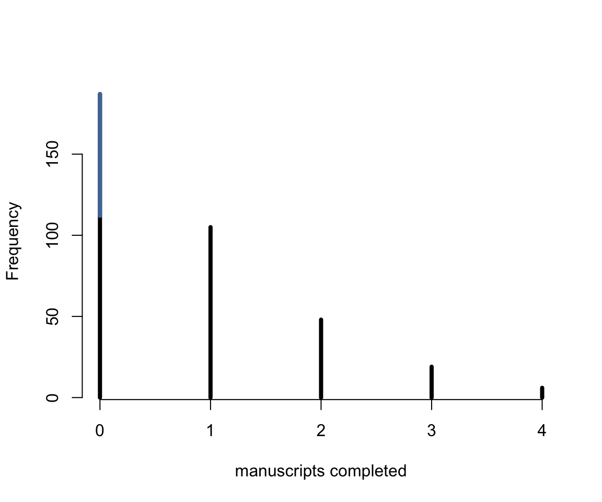
圖 57.5: Frequency distribution of zero-inflated observations. The blue lines sement over zero shows the y = 0 observations that arose from drinking. In real data, we typically cannot see which zeros come from which process.
圖 57.5 就用藍色的部分展示了偷懶沒上班造成的觀察值爲零的部分，辛苦工作但是不幸沒有產出的是黑色的觀察值。所以你就能理解了爲什麼說這樣的分佈被叫做零膨脹 (Zero-inflated)。在 rethinking 包裏提供了便捷的零膨脹泊松分佈，可以直接調用：
# [LEGACY rethinking — preserved for reference]
m12.3 <- ulam(
alist(
y ~ dzipois( p, lambda ),
logit(p) <- ap,
log(lambda) <- al,
ap ~ dnorm( -1.5, 1 ),
al ~ dnorm( 1, 0.5 )
), data = list(y = y), chains = 4
)
saveRDS(m12.3, file = "../Stanfits/m12_3.rds")b12.3 <- brm(
bf(y ~ 1, zi ~ 1),
family = zero_inflated_poisson(),
prior = c(prior(normal(1, 0.5), class = Intercept),
prior(normal(-1.5, 1), class = Intercept, dpar = "zi")),
data = data.frame(y = y),
chains = 4, cores = 4,
file = "Stanfits/brm_m12_3"
)## Family: zero_inflated_poisson
## Links: mu = log; zi = logit
## Formula: y ~ 1
## zi ~ 1
## Data: data.frame(y = y) (Number of observations: 365)
## Draws: 4 chains, each with iter = 2000; warmup = 1000; thin = 1;
## total post-warmup draws = 4000
##
## Regression Coefficients:
## Estimate Est.Error l-95% CI u-95% CI Rhat Bulk_ESS Tail_ESS
## Intercept 0.01 0.09 -0.17 0.19 1.00 1218 1608
## zi_Intercept -1.28 0.36 -2.13 -0.72 1.00 1294 1519
##
## Draws were sampled using sampling(NUTS). For each parameter, Bulk_ESS
## and Tail_ESS are effective sample size measures, and Rhat is the potential
## scale reduction factor on split chains (at convergence, Rhat = 1).可以計算模型中估計的這些工人偷懶的日子所佔的比例是多少：
draws <- as_draws_df(b12.3)
mean( inv_logit( draws$b_zi_Intercept )) # probability of drink/not working days## [1] 0.2227## [1] 1.013看，我們的模型給出了十分近似的結果，儘管不知道這些工人究竟在哪些天偷懶了，但是推算出大約有20%的工作日，他們是沒有在工作的。這是沒有預測變量的最基礎的截距模型，在真實情況下，會有更多的變量放在混合的兩行鏈接函數對應的預測模型中。
57.4 帶順序含義的多類別結果變量 ordered categorical outcomes
在某些心理學甚至普通的自然科學研究裏，我們非常容易碰見的一種結果變量是帶有順序的多類別結果，例如你可能被問過「如果從1-7中選擇一個數字來表達你的喜愛程度，數字越高表示越喜愛的話，你對壽司類食物的嗜好程度是多少數值？」這樣的問題。那麼這樣的問題的答案就是一系列1-7的數值。這樣的結果變量之間是存在順序的區別的，被叫做順序類別 ordered categories。它和計數型變量不同，不同順序之間的跨度，可以是不一樣的。也就是 1-2 之間的喜好程度之差，很可能不同於 6-7 之間的喜好程度之差。我們無法把這樣的結果簡單地視爲連續型的變量。
處理這樣結果的最佳解決方案是使用一種該叫做累積鏈接函數 (cumulative link function)。很容易理解我們設定數值爲3的累積概率，它等於比三小的數值 1， 2，以及它本身的概率之和。
數據來自經典的關於有軌電車的道德悖論問題。結果變量是 Trolley 數據中的 response 變量，它的答案是從 1-7 遞增的表示道德上認爲可以接受的程度。我們先描述一下這個結果變量的分佈情況：
d <- read.csv("../backupfiles/Trolley.csv", sep = ";")
simplehist( d$response,
xlab = "response",
xlim = c(1,7),
bty = "n")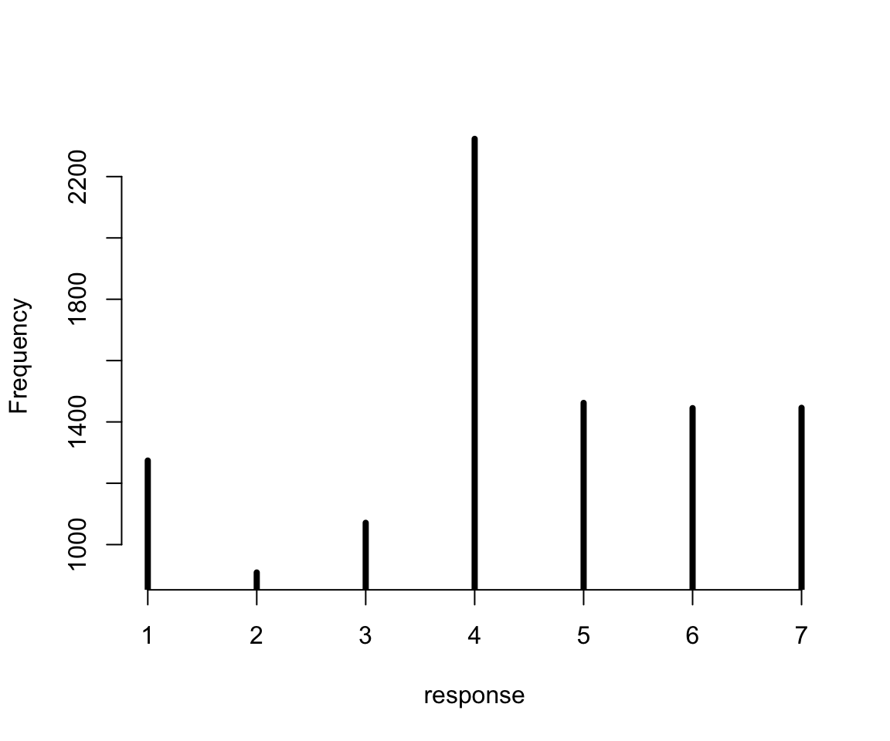
圖 57.6: Histogram of discrete response in the sample.
57.4.1 用不同的截距來描述一個有順序的分佈 describing an ordered distribution with intercepts
簡單地，我們可以使用這些結果的累積概率，取他們的對數累積比值 log-cumulative-odds。第一步是計算累積概率：
# discrete proportion of each response value
pr_k <- table(d$response) / nrow(d)
# cumsm converts to cumulative proportions
cum_pr_k <- cumsum( pr_k )
# plot
plot(1:7, cum_pr_k,
type = "b",
xlab = "response",
ylab = "cumulative proportion",
ylim = c(0, 1),
bty = "n")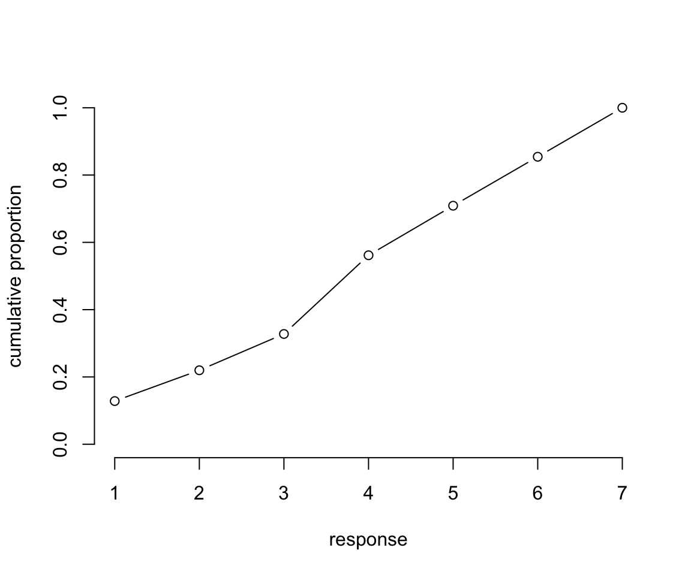
圖 57.7: Cumulative proportion of each response.
下一步就可以計算對數累積比值。我們需要的是一系列不同的截距 \(\alpha_k\)。每一個截距本身都使用對數累積比值作爲尺度，表示每一種選擇結果的累積概率：
\[ \log\frac{\text{Pr}(y_i \leqslant k)}{1 - \text{Pr}(y_i \leqslant k)} = \alpha_k \]
實際計算過程可以是：
## Warning in logit(cum_pr_k): NaNs produced## 1 2 3 4 5 6 7
## -1.92 -1.27 -0.72 0.25 0.89 1.77 NaNplot(1:6, lco[1:6],
type = "b",
xlab = "response",
ylab = "log-cumulative-odds",
# ylim = c(0, 1),
bty = "n")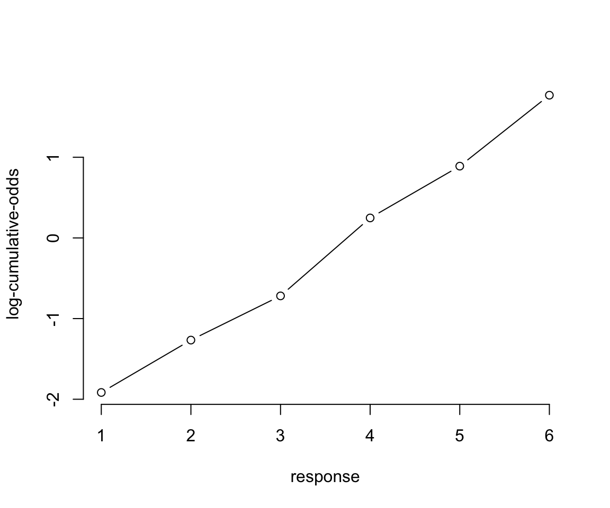
圖 57.8: Log-cumulative-odds of each response. Note that the log-cumulative-odds of response value 7 is infinity, so it is not shown.
接下來的重點是如何利用這些累積概率來計算整個數據產生過程的似然 likelihood。圖57.9 展示了思考的過程。每個截距 \(\alpha_k\) 其涵義其實是結果爲 \(k\) 時的累積概率的對數比值，我們可以使用簡單的逆函數命令把它轉換成累積概率本身。所以當我們觀察到的結果是 \(k\) 時，我們可以用減去它之前的累積概率的方法來計算該點本身的似然 likelihood：
\[ p_k = \text{Pr}(y_i = k) = \text{Pr}(y_i \leqslant k) - \text{Pr}(y_i \leqslant k - 1) \]
# primary data
total_n <- nrow(d)
d_plot <-
d %>%
dplyr::count(response) %>%
mutate(pr_k = n / total_n,
cum_pr_k = cumsum(pr_k)) %>%
mutate(discrete_probability = if_else(response == 1, cum_pr_k, cum_pr_k - pr_k))
# annotation
text <-
tibble(text = 1:7,
response = seq(from = 1.25, to = 7.25, by = 1),
cum_pr_k = d_plot$cum_pr_k - .065)
d_plot %>%
ggplot(aes(x = response, y = cum_pr_k,
color = cum_pr_k, fill = cum_pr_k)) +
geom_line(color = canva_pal("Green fields")(4)[1]) +
geom_point(shape = 21, colour = "grey92",
size = 2.5, stroke = 1) +
geom_linerange(aes(ymin = 0, ymax = cum_pr_k),
alpha = 1/2, color = canva_pal("Green fields")(4)[1]) +
geom_linerange(aes(x = response + .025,
ymin = ifelse(response == 1, 0, discrete_probability),
ymax = cum_pr_k),
color = "black") +
# number annotation
geom_text(data = text,
aes(label = text),
size = 4) +
scale_fill_gradient(low = canva_pal("Green fields")(4)[4],
high = canva_pal("Green fields")(4)[1]) +
scale_color_gradient(low = canva_pal("Green fields")(4)[4],
high = canva_pal("Green fields")(4)[1]) +
scale_x_continuous(breaks = 1:7) +
scale_y_continuous("cumulative proportion", breaks = c(0, .5, 1), limits = c(0, 1)) +
theme_bw() +
theme(axis.ticks = element_blank(),
axis.title.y = element_text(angle = 90),
legend.position = "none") ## Warning: Removed 1 row containing missing values or values outside the scale range (`geom_line()`).## Warning: Removed 1 row containing missing values or values outside the scale range
## (`geom_point()`).## Warning: Removed 1 row containing missing values or values outside the scale range (`geom_segment()`).
## Removed 1 row containing missing values or values outside the scale range (`geom_segment()`).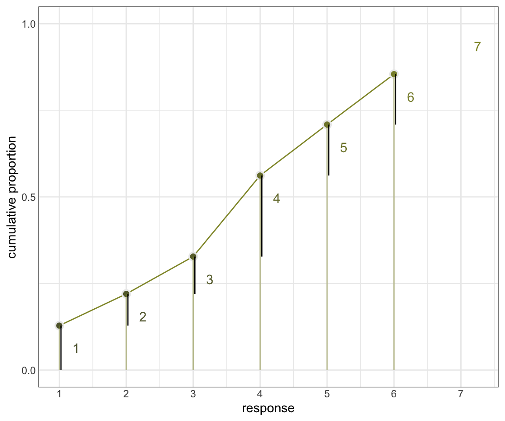
圖 57.9: Cumulative probability and ordered likelihood. The horizontal axis displays possible observable outcomes, from 1 through 7. The vertical axis displays cumulative probability. The gray bars over each outcome show cumulative probability. These keep growing with each successive outcome value. The darker line segments show the discrete probability of each individual outcome. These are the likelihoods that go into Bayes’ theorem.
上圖 57.9 中黑色的部分，也就是每個選項對應的概率減去前面所有選項概率之和的部分，就是我們需要的每個選項本身的似然函數。這個模型可以用下面的表達式來描述：
\[ \begin{aligned} R_i & \sim \text{Ordered-logit}(\phi_i, \kappa) & [\text{Probability of data}] \\ \phi_i & = 0 & [\text{linear model}] \\ \kappa_k & \sim \text{Normal}(0, 1.5) & [\text{common prior for each intercept}] \end{aligned} \]
當然我們可以把上面的描述擴展得更加仔細一些：
\[ \begin{aligned} R_i & \sim \text{Catergorical}(\mathbf{p}) & [\text{Probability of data}] \\ p_1 & = q_1 & [\text{Probabilities of each value }k] \\ p_k & = q_k - q_{k-1}\text{ for }K > k > 1 \\ p_K & = 1 - q_{K-1} \\ \text{logit}(p_k) & = \kappa_k - \phi_i & [\text{cumulative logit link}] \\ \phi_i & = \text{terms of linear model} & [\text{linear model}] \\ \kappa_k & \sim \text{Normal}(0, 1.5) & [\text{common prior for each intercept}] \end{aligned} \]
所以 Ordered-logit 分佈其實講的就是一個多項式分佈，每個選項的概率各自是 \(\mathbf{p} = \{ p_1, p_2, \dots, p_{K-1} \}\)。
於是我們來實際運行一下上述模型，先設計一個沒有預測變量的模型：
# [LEGACY rethinking — preserved for reference]
m12.4 <- ulam(
alist(
R ~ dordlogit(0, cutpoints),
cutpoints ~ dnorm(0, 1.5)
), data = list( R = d$response ), chains = 4, cores = 4
)
saveRDS(m12.4, file = "../Stanfits/m12_4.rds")d$response_f <- ordered(d$response)
b12.4 <- brm(
response_f ~ 1,
family = cumulative("logit"),
prior = prior(normal(0, 1.5), class = Intercept),
data = d,
chains = 4, cores = 4,
file = "Stanfits/brm_m12_4"
)## Family: cumulative
## Links: mu = logit
## Formula: response_f ~ 1
## Data: d (Number of observations: 9930)
## Draws: 4 chains, each with iter = 2000; warmup = 1000; thin = 1;
## total post-warmup draws = 4000
##
## Regression Coefficients:
## Estimate Est.Error l-95% CI u-95% CI Rhat Bulk_ESS Tail_ESS
## Intercept[1] -1.92 0.03 -1.98 -1.86 1.00 2844 2713
## Intercept[2] -1.27 0.02 -1.32 -1.22 1.00 3412 3478
## Intercept[3] -0.72 0.02 -0.76 -0.68 1.00 4066 3610
## Intercept[4] 0.25 0.02 0.21 0.29 1.00 4552 3028
## Intercept[5] 0.89 0.02 0.85 0.93 1.00 3909 3016
## Intercept[6] 1.77 0.03 1.72 1.83 1.00 4048 3410
##
## Further Distributional Parameters:
## Estimate Est.Error l-95% CI u-95% CI Rhat Bulk_ESS Tail_ESS
## disc 1.00 0.00 1.00 1.00 NA NA NA
##
## Draws were sampled using sampling(NUTS). For each parameter, Bulk_ESS
## and Tail_ESS are effective sample size measures, and Rhat is the potential
## scale reduction factor on split chains (at convergence, Rhat = 1).可以看見每個截距的事後估計量都被計算得十分精確。我們可以使用邏輯函數的逆函數把累積概率簡單地計算回來：
# Extract threshold estimates (cutpoints)
thresholds <- fixef(b12.4)[, "Estimate"]
round( inv_logit(thresholds), 3)## Intercept[1] Intercept[2] Intercept[3] Intercept[4] Intercept[5] Intercept[6]
## 0.128 0.220 0.328 0.562 0.709 0.854這與我們之前計算過的各截距結果完全一致，而且此時我們還擁有了這些截距的事後概率分佈。
57.4.2 增加預測變量
爲了給模型中增加預測變量，我們需要設計一個函數，使之成爲和截距相加或相減形式的模型。例如我們有一個連續型的預測變量 \(x_i\)，那麼可以定義 \(\phi_i = \beta x_i\) 作爲預測變量可以給模型施加的影響。這裏我們給累積邏輯回歸模型設計的函數是：
\[ \begin{aligned} \log \frac{\text{Pr}(y_i \leqslant k)}{1 - \text{Pr}(y_i \leqslant k)} & = \alpha_k - \phi_i \\ \phi_i & = \beta x_i \end{aligned} \]
之所以這裏選擇用減法，是因爲如果降低累積對數比值 (log-cumulative-odds)，就需要把部分的概率質量 (probability mass) 往右側較高的結果選項處平移。這樣如果 \(\beta\) 大於零，就意味着如果 \(x_i\) 變大，\(y_i\) 變大。如果你對此感到困惑，我們簡單計算一下，我們把 m12.4 的事後概率分佈的各個均值結果提取出來，然後統一減去0.5看會得到怎樣的結果：
## [1] 0.13 0.09 0.11 0.23 0.15 0.15 0.15上述的這些概率其實意味着平均的結果選擇會是：
## [1] 4.2現在把每個選項對應的截距減去 0.5：
## [1] 0.08 0.06 0.08 0.21 0.16 0.18 0.22你會發現概率質量整體往右邊平移了，選擇數值低選項的概率變得比之前小了，也就是傾向於選擇高數值的選項。此時的平均選擇結果是：
## [1] 4.73這就是爲什麼我們在這個模型中的線性回歸部分使用減法而不是用加法的原因。這樣的話一個是正的 \(\beta\) 也就意味着該預測變量傾向於使得結果選擇更大的選項，也就是使得平均結果變大。
接下來我們就可以實現在模型中添加預測變量這個願望了，回到 Trolley 數據上來，期望添加的預測變量其實包含了下面幾個： action, intention, contact。
action是行動原則。該原則認爲，和無視不作爲造成的同等程度的傷害相比，由於自己的行爲造成的傷害在道德上更無法接受。intention是意圖原則。該原則認爲，和預見到爲了達成目標可能造成的同等程度傷害相比，爲了達成該目標而故意造成他人傷害在道德上更無法接受。contact是接觸原則。該原則認爲，和沒有通過物理上的接觸對他人造成的同等程度傷害相比，通過物理上的接觸對他人造成了傷害在道德上更無法接受。
上述三個原則的解釋告訴我們，contact 和 action 應該是互斥的關係，二者不會有交集。但是這兩個原則又可能和 intention 有交集。於是這三個預測變量之間組成的可能的預測變量關係有如下六種：
- 三者皆無，不認同全部三個原則。
- 只認同行動原則。
- 只認同意圖原則。
- 只認同接觸原則。
- 認同行爲和意圖原則。
- 認同接觸和意圖原則。
其中 5.6. 兩個預測變量關係意味着意圖原則和行爲，及接觸原則之間有交互作用 (interaction)。這裏我們利用一個小技巧把這個交互作用表達出來：
\[ \begin{aligned} \log \frac{\text{Pr}(y_i \leqslant k)}{1 - \text{Pr}(y_i \leqslant k)} & = \alpha_k - \phi_i \\ \phi_i & = \beta_A A_i + \beta_C C_i + B_{I,i} I_i \\ B_{I,i}& = \beta_I + \beta_{IA} A_i + \beta_{IC} C_i \end{aligned} \]
其中，\(A_i, C_i, I_i\) 分別表示 action, contact, intention 三個變量。我們接下來把上述數學模型放到 Stan 模型中去運行：
# [LEGACY rethinking — preserved for reference]
dat <- list(
R = d$response,
A = d$action,
I = d$intention,
C = d$contact
)
m12.5 <- ulam(
alist(
R ~ dordlogit( phi, cutpoints ),
phi <- bA * A + bC * C + BI * I,
BI <- bI + bIA * A + bIC * C,
c(bA, bI, bC, bIA, bIC) ~ dnorm( 0, 0.5 ),
cutpoints ~ dnorm( 0, 1.5 )
), data = dat, chains = 4, cores = 4
)
saveRDS(m12.5, file = "../Stanfits/m12_5.rds")b12.5 <- brm(
response_f ~ action + contact + intention + action:intention + contact:intention,
family = cumulative("logit"),
prior = c(prior(normal(0, 0.5), class = b),
prior(normal(0, 1.5), class = Intercept)),
data = d,
chains = 4, cores = 4,
file = "Stanfits/brm_m12_5"
)## Family: cumulative
## Links: mu = logit
## Formula: response_f ~ action + contact + intention + action:intention + contact:intention
## Data: d (Number of observations: 9930)
## Draws: 4 chains, each with iter = 2000; warmup = 1000; thin = 1;
## total post-warmup draws = 4000
##
## Regression Coefficients:
## Estimate Est.Error l-95% CI u-95% CI Rhat Bulk_ESS Tail_ESS
## Intercept[1] -2.64 0.05 -2.74 -2.54 1.00 3607 3210
## Intercept[2] -1.94 0.05 -2.03 -1.85 1.00 3490 3530
## Intercept[3] -1.35 0.05 -1.44 -1.26 1.00 3373 3140
## Intercept[4] -0.31 0.04 -0.40 -0.23 1.00 3351 2870
## Intercept[5] 0.36 0.04 0.27 0.44 1.00 3400 3237
## Intercept[6] 1.27 0.05 1.18 1.36 1.00 3466 3361
## action -0.48 0.06 -0.58 -0.36 1.00 3476 2861
## contact -0.35 0.07 -0.48 -0.21 1.00 3566 3004
## intention -0.29 0.06 -0.41 -0.18 1.00 2970 3035
## action:intention -0.43 0.08 -0.58 -0.27 1.00 3468 2895
## contact:intention -1.23 0.10 -1.42 -1.04 1.00 3319 3211
##
## Further Distributional Parameters:
## Estimate Est.Error l-95% CI u-95% CI Rhat Bulk_ESS Tail_ESS
## disc 1.00 0.00 1.00 1.00 NA NA NA
##
## Draws were sampled using sampling(NUTS). For each parameter, Bulk_ESS
## and Tail_ESS are effective sample size measures, and Rhat is the potential
## scale reduction factor on split chains (at convergence, Rhat = 1).這裏我們暫時對每個選項本身的概率不感興趣，而是對影響結果的預測變量的回歸係數們更加感興趣。看這些回歸係數的事後概率分佈，他們每一個都很穩定地小於0。也就是每個原則都會降低選擇結果的平均值。
# precis-style caterpillar plot for slope parameters
fe <- fixef(b12.5)
slope_idx <- !grepl("Intercept", rownames(fe))
fe_s <- fe[slope_idx, , drop = FALSE]
par(mar = c(5, 10, 2, 2)) # wider left margin for labels
plot(fe_s[, "Estimate"], seq_len(nrow(fe_s)),
xlim = c(-1.4, 0), pch = 1, cex = 1.2,
xlab = "Value", ylab = "", yaxt = "n", bty = "n")
segments(fe_s[, "Q2.5"], seq_len(nrow(fe_s)),
fe_s[, "Q97.5"], seq_len(nrow(fe_s)))
axis(2, at = seq_len(nrow(fe_s)), labels = rownames(fe_s), las = 1, cex.axis = 0.9)
abline(v = 0, lty = 3, col = "gray")
for (h in seq_len(nrow(fe_s))) abline(h = h, lty = 3, col = "gray")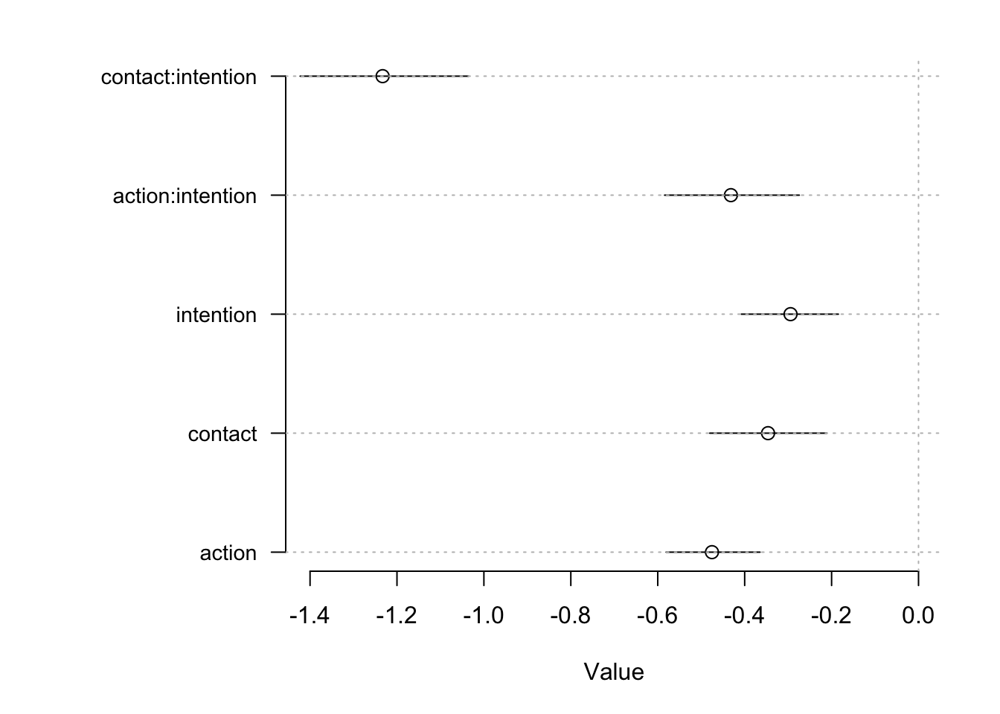
圖 57.10: The marginal posterior distributions of the slopes in b12.5.
可以觀察到，意圖原則和接觸原則的交互作用項的回歸係數對結果的影響最大，但是我們也發現他們單獨對結果的影響都不是很大。
其中一個常見且十分有用的表達方式是使用橫軸表示預測變量，縱軸作爲所有選項的累積概率。這樣我們就可以繪製一系列的不同預測變量和結果曲線之間的示意圖。下面就來嘗試一下這樣的展示結果的方法。
plot( NULL, type = "n",
bty = "n",
xlab = "intention",
ylab = "probability",
xlim = c(0, 1),
ylim = c(0, 1),
xaxp = c(0, 1, 1),
yaxp = c(0, 1, 2),
main = "action = 0, contact = 0")
kA <- 0 # value for action
kC <- 0 # value for contact
kI <- 0:1 # values of intention to calculate over
pdat <- data.frame(action = kA, contact = kC, intention = kI)
# Get linear predictor draws (phi)
phi <- posterior_linpred(b12.5, newdata = pdat)
# Get threshold draws
draws <- as_draws_df(b12.5)
thr_cols <- grep("^b_Intercept\\[", names(draws), value = TRUE)
thr_mat <- as.matrix(draws[, thr_cols])## Warning: Dropping 'draws_df' class as required metadata was removed.for( s in 1:50 ) {
pk <- pordlogit( 1:6, phi[s, ], thr_mat[s, ])
for( i in 1:6 ) lines(kI, pk[,i], col = grau(0.1))
}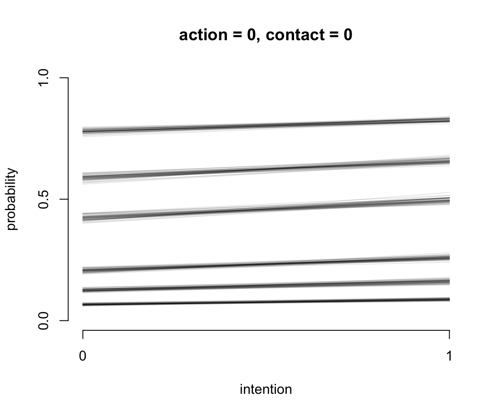
圖 57.11: Posterior predictions of the ordered categorical model with interactions, b12.5. The distribution of posterior probabilities of each outcome across values of intention for action = 0, and contact = 0.
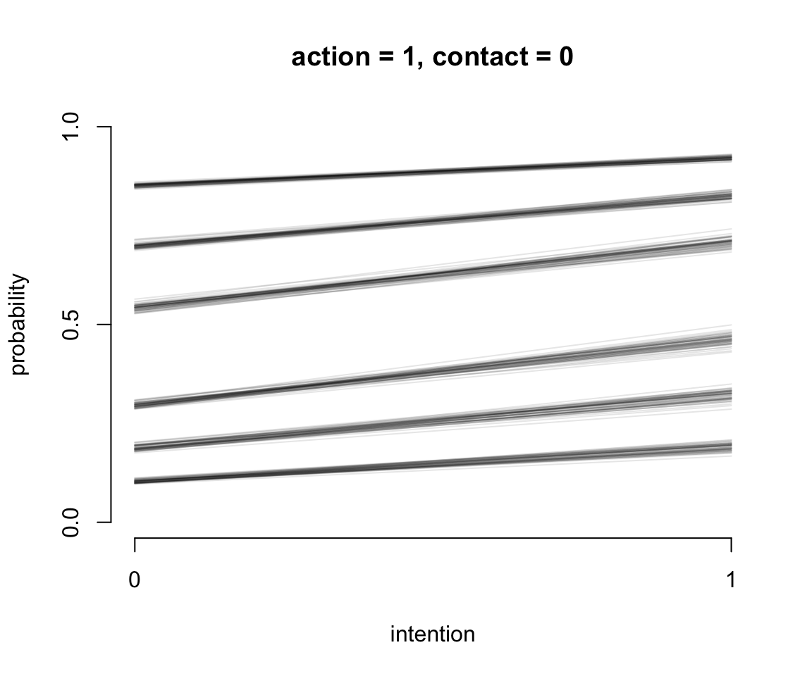
圖 57.12: Posterior predictions of the ordered categorical model with interactions, b12.5. The distribution of posterior probabilities of each outcome across values of intention for action = 1, and contact = 0.
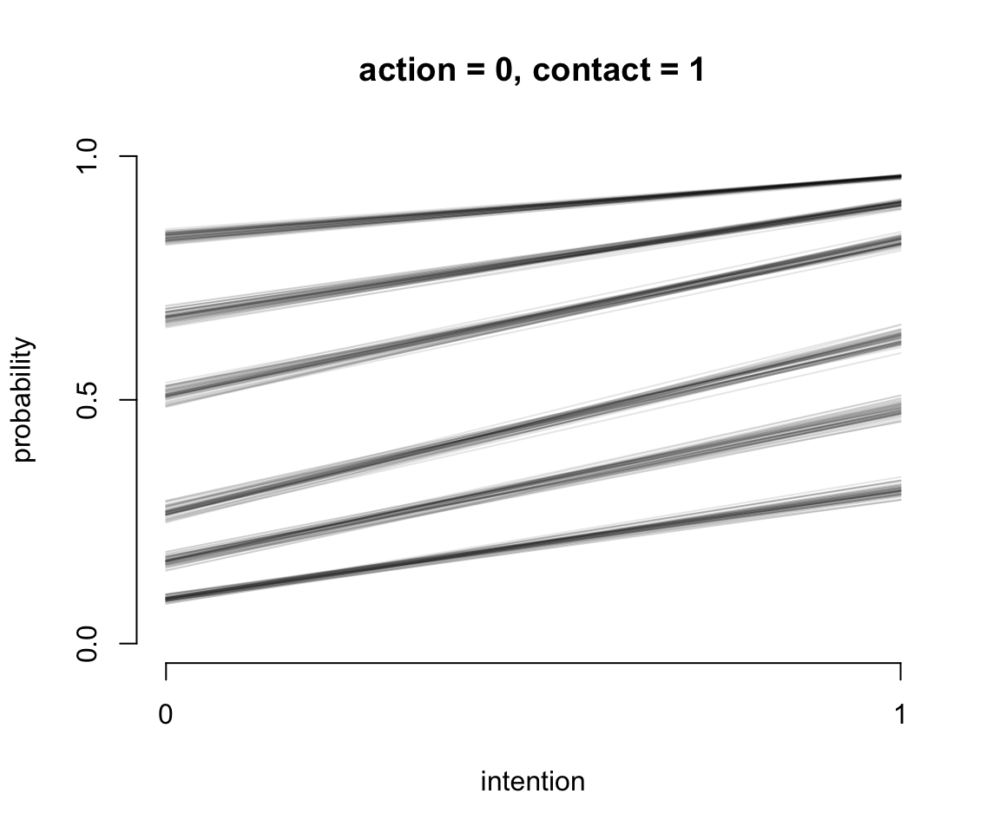
圖 57.13: Posterior predictions of the ordered categorical model with interactions, b12.5. The distribution of posterior probabilities of each outcome across values of intention for action = 0, and contact = 1.
我們繪製了三個連續的圖57.11, 57.12, 57.13 展示了不同的預測變量取值時，對結果選擇的預測。橫軸的 intention 分別取 0, 1 時，且當不同條件的 action, contact 固定不變時，對結果變量的影響。所以第一個圖57.11，其實展示的就是不認同行動原則 (no action)，不認同接觸原則 (no contact)，也不認同意圖原則 (no intention) 人，如果變成了認同意圖原則的話，他們選擇的7個結果的變化。同理可以解釋其餘兩個圖的涵義。值得注意的是，第三張圖 57.13 中其實展示的就是我們觀察到的 contact 和 intention 之間存在的交互作用。該圖也展示了不認同行動原則 (no action)，但是同時認同接觸原則 (contact = 1) 和意圖原則 (intention = 1) 的話，更多的人會傾向於選擇數值更低的結果，也就意味着這樣的受試對象其實更有可能在該試驗中選擇無視火車軋死更多的5人，也不會扣動變軌機制讓火車轉向去軋死一個另一条鐵軌上的人。另外一種直觀的方法是繪製不同預測變量情況下的結果概率柱狀圖。
kA <- 0 # value of action
kC <- 0 # value for contact
kI <- 0:1 # values for intention to calculate over
pdat <- data.frame(action = kA, contact = kC, intention = kI)
s <- posterior_predict(b12.5, newdata = pdat)
# Overlay two histograms: intention=0 (black) and intention=1 (blue)
tab0 <- table(factor(s[,1], levels = 1:7))
tab1 <- table(factor(s[,2], levels = 1:7))
ymax <- max(c(tab0, tab1)) * 1.1
plot(1:7, tab0, type = "h", lwd = 4, col = "black",
xlab = "response", ylab = "Frequency", bty = "n",
xlim = c(0.5, 7.5), ylim = c(0, ymax),
main = "action = 0, contact = 0")
lines(1:7 + 0.1, tab1, type = "h", lwd = 4, col = rangi2)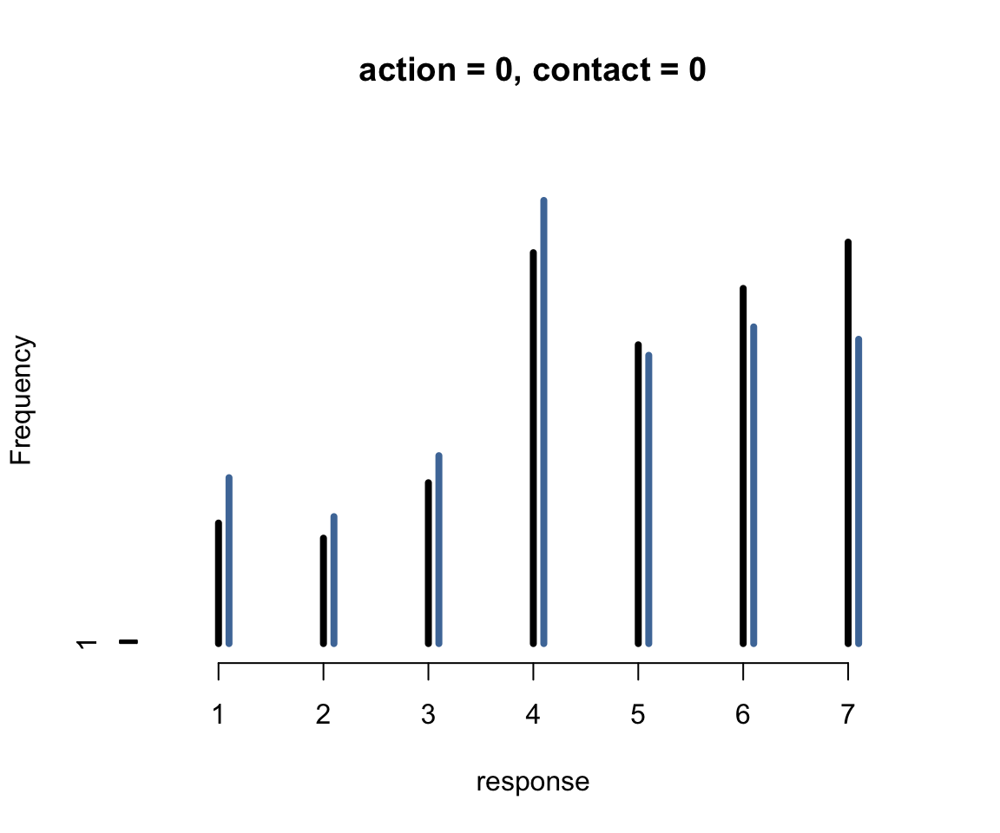
圖 57.14: The same interactions in the b12.5 model visualized as histograms of simulated outcomes. The black line segments are intention =0. The blue line segments are intention = 1.
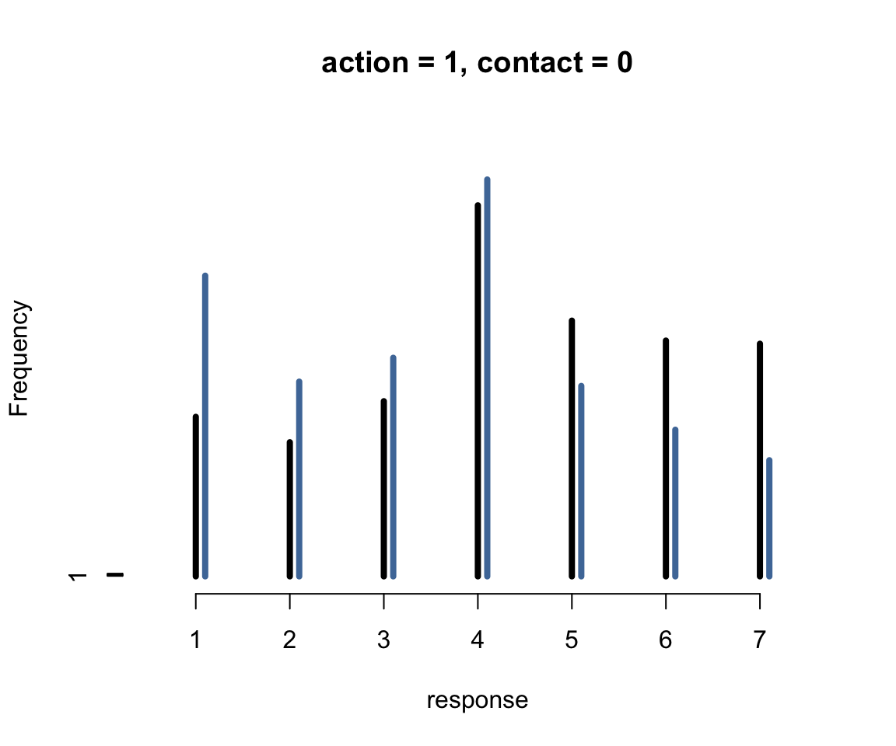
圖 57.15: The same interactions in the b12.5 model visualized as histograms of simulated outcomes. The black line segments are intention =0. The blue line segments are intention = 1.
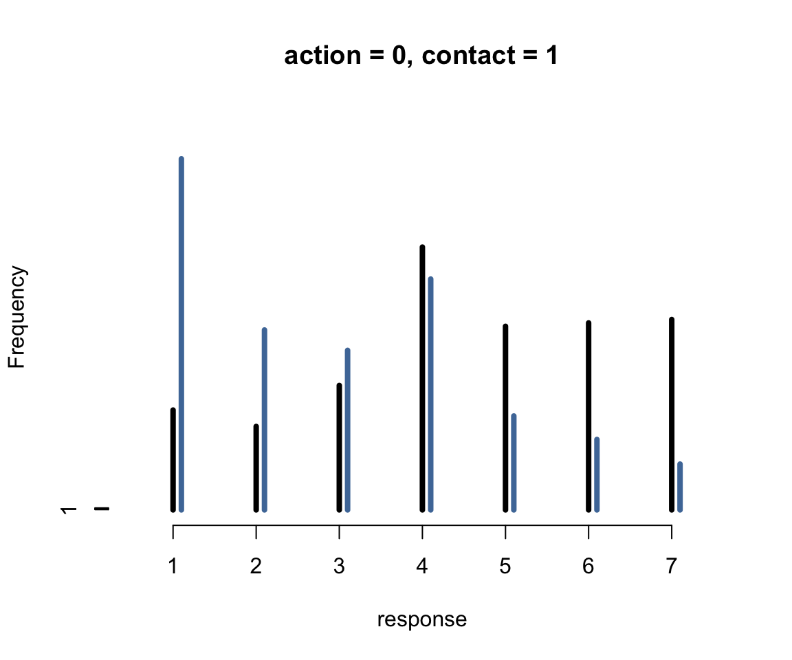
圖 57.16: The same interactions in the b12.5 model visualized as histograms of simulated outcomes. The black line segments are intention =0. The blue line segments are intention = 1.
57.5 帶順序含義的多類別預測型變量 ordered categorical predictors
前一個小結討論了怎樣使用累積對數比值函數來分析結果變量是有順序的多類別變量的情況。實際分析中我們還經常會碰見相似類型的預測變量。也就是帶有順序涵義的多類別預測型變量。多數人可能選擇把它轉化成連續型變量，但是這其實是有問題的。因爲我們並不想增加假設說不同類別之間的差距，或者叫類別之間的距離相等或者是不等的可以量化測量的距離。我們其實可以巧妙地避免這樣的不必要假設。
在前一節使用的 Trolley 有軌電車的道德悖論問題數據中，有關於受試者的教育程度的一個可以用作預測變量的數據：
# Reload Trolley data (same CSV as above)
d <- read.csv("../backupfiles/Trolley.csv", sep = ";")
levels(factor(d$edu))## [1] "Bachelor's Degree" "Elementary School" "Graduate Degree" "High School Graduate"
## [5] "Master's Degree" "Middle School" "Some College" "Some High School"# reorder
d <- d %>%
mutate(edu = fct_relevel(edu,
"Elementary School",
"Middle School",
"Some High School",
"High School Graduate",
"Some College",
"Bachelor's Degree",
"Master's Degree",
"Graduate Degree"))
levels(d$edu)## [1] "Elementary School" "Middle School" "Some High School" "High School Graduate"
## [5] "Some College" "Bachelor's Degree" "Master's Degree" "Graduate Degree"接下來的思考過程將會很有趣。我們發現教育程度的不同類別之間是存在順序關係的，但是我們不確定不同的受教育程度之間的差別會是成等比的，也就是說小學和中學之間的差別，相比高中和大學之間的差別，應該允許它們不同。但是我們又認爲這個隨着學歷增加，對結果的選擇影響應該是遞增的關係才符合常理。那麼我們需要的是能夠測量這個能夠隨着學歷增加而遞增的影響。上面的數據中，教育程度有八個類別，那麼衡量它們八個之間差異的變量，應該有 \(8-1 = 7\) 個。因此第一步我們思考得出的結論是，第一個學歷增量是從小學畢業到中學畢業的部分 \(\delta_1\)：
\[ \phi_i = \delta_1 + \text{Other stuff} \]
其中，\(\text{Other stuff}\) 的部分是你希望加的其餘的預測變量的部分。
那如果從第二低教育程度（中學）升高到高中但是未完成之間的影響也用相似的方法，一個 \(\delta_2\) 加入到模型中去：
\[ \phi_i = \delta_1 + \delta_2 + \text{Other stuff} \]
以此類推，八個學歷層級之間有七個增量，也就是從 \(\delta_1,\dots,\delta_7\) 都放進模型之後會獲得：
\[ \phi_i = \sum_{j = 1}^7 \delta_j + \text{Other stuff} \]
而且我們也同意說，這個等式的第一個部分 \(\sum_{j = 1}^7 \delta_j\) 其實是完成到最高學歷之後，對結果變量的終極影響。但是這樣的表達依然不太便利，最簡單的方式其實是，把這整個學歷對結果的影響認爲是一個係數 \(\beta_E\)，然後每個不同學歷之間的增量，其實是佔這個 \(\beta_E\) 的一個百分比。同時我們使用啞變量令 \(\delta_0 = 0\)，改寫後的模型就變成了：
\[ \phi_i = \beta_E \sum_{j = 0}^{E_i - 1} \delta_j + \text{Other stuff} \]
那麼如果我們要把這個教育程度也作爲一個預測變量加入前一節中使用的順序邏輯回歸模型中時，我們的模型可以變化成爲：
\[ \begin{aligned} R_i & \sim \text{Ordered-logit}(\phi_i, \kappa) & [\text{Probability of data}] \\ \phi_i & = \beta_E \sum_{j = 0}^{E_i - 1}\delta_j + \beta_A A_i + \beta_CC_i + \beta_I I_i & [\text{Linear model}] \\ \kappa_K & \sim \text{Normal}(0, 1.5) & [\text{Priors}] \\ \beta_A, \beta_I, \beta_C, \beta_E & \sim \text{Normal}(0, 1) \\ \delta & \sim \text{Dirichlet}(\alpha) \end{aligned} \]
最後一行的先驗概率分佈設置使用的是狄雷克雷分佈 (Dirichlet Distribution)。狄雷克雷分佈其實是beta分佈的多項式版本，它其實就是應對多個選項的分佈問題，所有選項的選擇概率之和爲1。beta分佈的話，只有兩個選項，0和1。狄雷克雷分佈，就沒有選項的限制了，可以是無數多的可能性，但是所有可能性之和是1。我們用計算機模擬來展示一下先驗概率分佈是 \(\text{Dirichlet}(2)\) 的採樣結果是怎樣的：
set.seed(2020) # <- I never trust this can generate reliable results anymore
delta <- rdirichlet(10, alpha = rep(2, 7))
# we now have 10 vectors with 7 probabilities, each summing to 1.
str(delta)## num [1:10, 1:7] 0.1687 0.2521 0.0403 0.1036 0.1159 ...plot(NULL,
xlim = c(1, 7),
ylim = c(0, 0.5),
xlab = "index",
bty = "n",
ylab = "probabilities"
)
h <- 3
for ( i in 1:nrow(delta) ) lines( 1:7, delta[i, ],
type = "b",
pch = ifelse(i == h, 16, 1),
lwd = ifelse(i == h, 5, 1.5),
col = ifelse(i == h, "black",
col.alpha("black", 0.7)))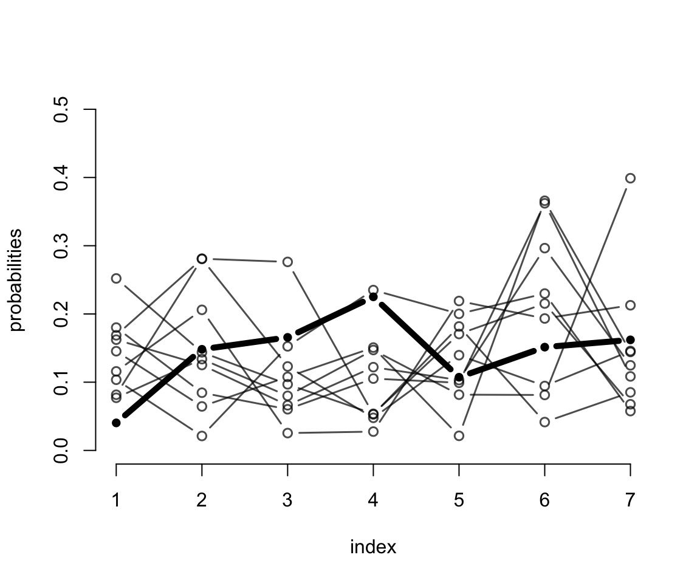
圖 57.17: Simulated draws from a Dirichlet prior with alpha = {2,2,2,2,2,2,2}. The highlighted vector is not special but just to show how much variation can exist in a single vector. This prior does not expect all the probabilities to be equal. Instead it expects that any of the probabilities could be bigger or smaller than the others.
接下來我們就可以寫下模型代碼並運行了：
# [LEGACY rethinking — preserved for reference]
dat <- list(
R = d$response,
action = d$action,
intention = d$intention,
contact = d$contact,
E = as.integer(d$edu), # turn education levels into index
alpha = rep(2, 7) # prior for delta
)
m12.6 <- ulam(
alist(
R ~ ordered_logistic( phi, kappa ),
phi <- bE * sum( delta_j[1:E] ) + bA * action + bI * intention + bC * contact,
kappa ~ normal( 0 , 1.5 ),
c(bA, bI, bC, bE) ~ normal(0, 1),
vector[8]: delta_j <<- append_row(0, delta),
simplex[7]: delta ~ dirichlet( alpha )
), data = dat, chains = 4, cores = 4
)
saveRDS(m12.6, "../Stanfits/m12_6.rds")# brms equivalent: mo() implements the same Dirichlet monotonic decomposition
d$edu_int <- as.integer(d$edu)
d$response_f <- ordered(d$response)
b12.6 <- brm(
response_f ~ mo(edu_int) + action + intention + contact,
family = cumulative("logit"),
prior = c(prior(normal(0, 1), class = b),
prior(normal(0, 1.5), class = Intercept),
prior(dirichlet(2), class = simo, coef = "moedu_int1")),
data = d,
chains = 4, cores = 4,
file = "Stanfits/brm_m12_6"
)其中，
bE * sum( delta_j[1:E] )就是我們新加入的關於受教育程度的部分。但是由於向量delta_j有八個元素，第一個我們需要使之設定成爲 0，即 \(\delta_0 =０\)，其餘的 7 個元素則是需要模型運算的。vector[8]: delta_j <<- append_row(0, delta)的部分，其實是 Stan 代碼，它的涵義是告訴 Stan 要創建一個含有八個元素的向量vector[8]，使之命名爲delta_j，然後這個delta_j本身則是由append_row(0, delta)構成，它的第一個元素是 0, 之後的元素則是另外的 7 個服從狄雷克雷分佈的數據simplex[7]: delta ~ dirichlet( alpha )。
這個模型運行的時間會比較長，但是使用貝葉斯模型的你我都知道，有些事情是值得等待的。這就來看看模型運行的結果，先忽略掉 kappa 的估計結果：
## Family: cumulative
## Links: mu = logit
## Formula: response_f ~ mo(edu_int) + action + intention + contact
## Data: d (Number of observations: 9930)
## Draws: 4 chains, each with iter = 2000; warmup = 1000; thin = 1;
## total post-warmup draws = 4000
##
## Regression Coefficients:
## Estimate Est.Error l-95% CI u-95% CI Rhat Bulk_ESS Tail_ESS
## Intercept[1] -3.14 0.17 -3.51 -2.85 1.00 2113 2173
## Intercept[2] -2.46 0.17 -2.83 -2.18 1.00 2115 2202
## Intercept[3] -1.88 0.17 -2.24 -1.60 1.00 2112 2252
## Intercept[4] -0.85 0.17 -1.23 -0.58 1.00 2123 2294
## Intercept[5] -0.18 0.17 -0.55 0.09 1.00 2120 2271
## Intercept[6] 0.72 0.17 0.35 0.99 1.00 2107 2296
## action -0.71 0.04 -0.79 -0.63 1.00 5228 3070
## intention -0.72 0.04 -0.79 -0.65 1.00 5571 3242
## contact -0.96 0.05 -1.05 -0.86 1.00 5067 3381
## moedu_int -0.05 0.03 -0.11 -0.01 1.00 2061 2244
##
## Monotonic Simplex Parameters:
## Estimate Est.Error l-95% CI u-95% CI Rhat Bulk_ESS Tail_ESS
## moedu_int1[1] 0.26 0.15 0.04 0.60 1.00 2555 2693
## moedu_int1[2] 0.14 0.09 0.02 0.36 1.00 5092 2681
## moedu_int1[3] 0.19 0.11 0.03 0.44 1.00 4564 2403
## moedu_int1[4] 0.16 0.09 0.03 0.38 1.00 3958 2633
## moedu_int1[5] 0.04 0.04 0.00 0.13 1.00 3340 2383
## moedu_int1[6] 0.09 0.06 0.01 0.24 1.00 4200 2897
## moedu_int1[7] 0.12 0.07 0.02 0.29 1.00 4719 2731
##
## Further Distributional Parameters:
## Estimate Est.Error l-95% CI u-95% CI Rhat Bulk_ESS Tail_ESS
## disc 1.00 0.00 1.00 1.00 NA NA NA
##
## Draws were sampled using sampling(NUTS). For each parameter, Bulk_ESS
## and Tail_ESS are effective sample size measures, and Rhat is the potential
## scale reduction factor on split chains (at convergence, Rhat = 1).受教育程度這個變量對結果的選擇的影響整體來說是負的 moedu_int = -0.05。也就是說，受教育程度最高的受試者，會傾向於不去拉動變軌的機制。然後我們來看這一系列的 delta 變量的運算結果（在 brms 中對應 simo_moedu_int1 系列參數）。圖 57.18 顯示，每個學歷的增加都多多少少地增加了學歷對結果的影響，但是其中第五層級的學歷 SCol = Some college 比起從高中畢業 HSG = high school graduate 的增加可以說微不足道。
# [LEGACY rethinking — preserved for reference]
delta_labels <- c("Elem", "MidSch", "SHS", "HSG",
"SCol", "Bach", "Mast", "Grad")
pairs( m12.6, pars = "delta", labels = delta_labels)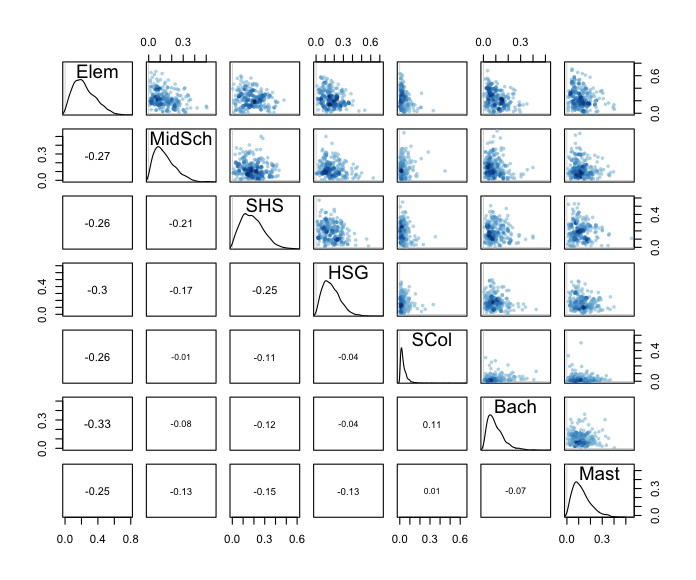
圖 57.18: Posterior distribution of incremental educational effects. Every additional level of education tends to add a little more disapproval, except for Some College (SCol), which adds very little.
最後我們再來跟傳統的方法比較一下這個改進之後的模型建立方法和傳統的把不同的類別做簡單的啞變量甚至是改成連續形變量的方法的結果。爲了能讓二者之間直接比較，我們需要把受教育程度這個變量改成連續型變量之後，把它標準化，使之成爲 0-1 之間的數字：
# [LEGACY rethinking — preserved for reference]
dat$edu_norm <- normalize( as.integer(d$edu) )
epiDisplay::summ(dat$edu_norm, graph = FALSE)
m12.7 <- ulam(
alist(
R ~ ordered_logistic(mu, cutpoints),
mu <- bE * edu_norm + bA * action + bI * intention + bC * contact,
c(bA, bI, bC, bE) ~ normal(0, 1),
cutpoints ~ normal(0, 1.5)
), data = dat, chains = 4, cores = 4
)
# saveRDS(m12.7, "Stanfits/m12_7.rds")d$edu_norm <- normalize(as.integer(d$edu))
b12.7 <- brm(
response_f ~ edu_norm + action + intention + contact,
family = cumulative("logit"),
prior = c(prior(normal(0, 1), class = b),
prior(normal(0, 1.5), class = Intercept)),
data = d,
chains = 4, cores = 4,
file = "Stanfits/brm_m12_7"
)## Family: cumulative
## Links: mu = logit
## Formula: response_f ~ edu_norm + action + intention + contact
## Data: d (Number of observations: 9930)
## Draws: 4 chains, each with iter = 2000; warmup = 1000; thin = 1;
## total post-warmup draws = 4000
##
## Regression Coefficients:
## Estimate Est.Error l-95% CI u-95% CI Rhat Bulk_ESS Tail_ESS
## Intercept[1] -2.91 0.08 -3.07 -2.76 1.00 4429 3457
## Intercept[2] -2.23 0.08 -2.38 -2.08 1.00 4704 3385
## Intercept[3] -1.65 0.08 -1.80 -1.50 1.00 4838 3542
## Intercept[4] -0.63 0.07 -0.77 -0.48 1.00 5028 3363
## Intercept[5] 0.04 0.07 -0.11 0.19 1.00 5098 3160
## Intercept[6] 0.95 0.07 0.80 1.10 1.00 5142 3484
## edu_norm -0.12 0.09 -0.30 0.07 1.00 5764 3521
## action -0.71 0.04 -0.78 -0.63 1.00 3891 3356
## intention -0.72 0.04 -0.79 -0.65 1.00 4151 3227
## contact -0.96 0.05 -1.06 -0.86 1.00 3984 3029
##
## Further Distributional Parameters:
## Estimate Est.Error l-95% CI u-95% CI Rhat Bulk_ESS Tail_ESS
## disc 1.00 0.00 1.00 1.00 NA NA NA
##
## Draws were sampled using sampling(NUTS). For each parameter, Bulk_ESS
## and Tail_ESS are effective sample size measures, and Rhat is the potential
## scale reduction factor on split chains (at convergence, Rhat = 1).你會看見，這時候給出的運算結果提示教育程度並不影響結果的選擇，或者影響幾乎可以忽略不計 edu_norm = -0.12, 95% CrI: -0.30, 0.07 。但是很顯然這不是事實，因爲不同教育程度之間的跨度，不能認爲是一個線性的變化過程，不同的教育程度的提升之間對結果的影響並不是簡單的一成不變的 different levels have different incremental associations。